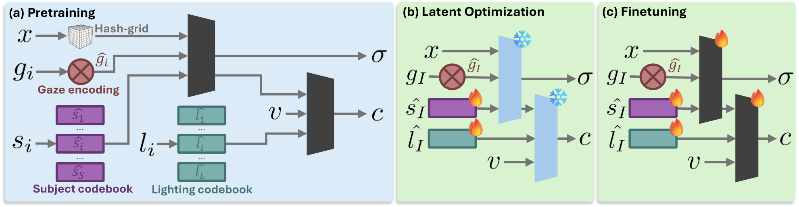
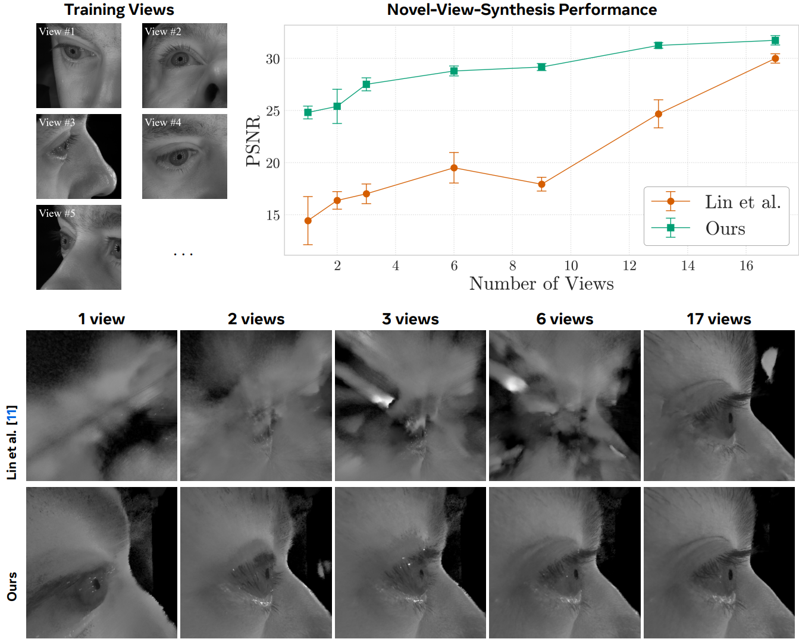
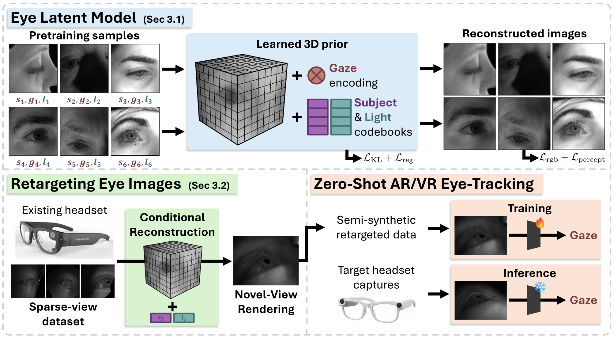
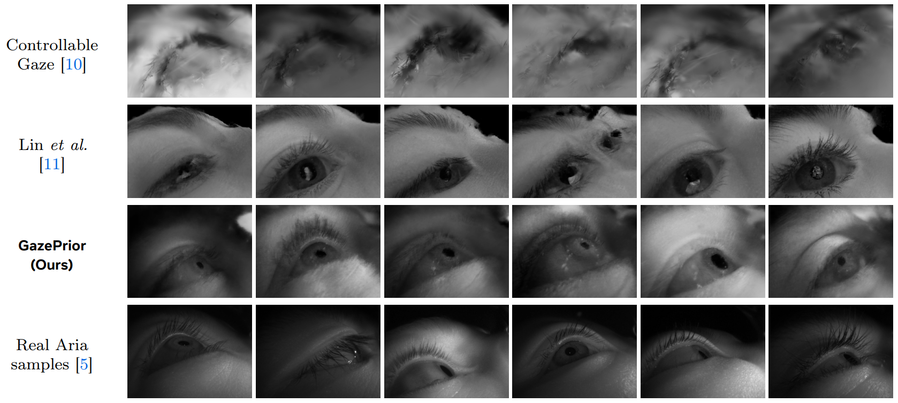
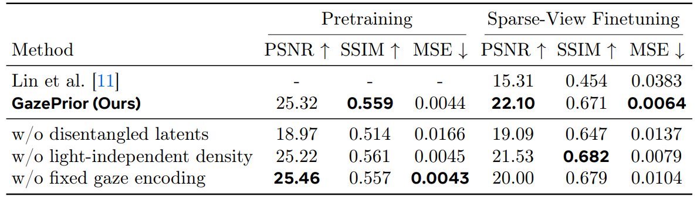
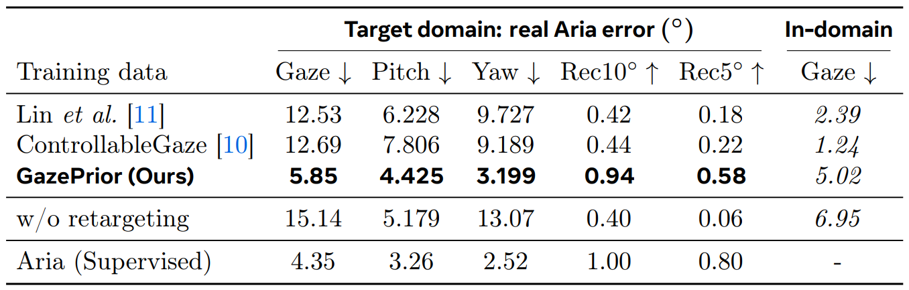

GazePrior is a learned 3D prior for human eyes that disentangles identity, gaze, and lighting to reconstruct high-fidelity views from sparse headset captures. We retarget annotated data from legacy devices onto any new camera layout, producing synthetic training images realistic enough for zero-shot AR/VR eye tracking without collecting a single frame on the target hardware.
GazePrior: disentangled gaze, subject and light model
Although eye images vary widely across people, gaze, and light conditions, they share strong structural similarities. We model this structure as a conditional radiance field driven by disentangled latent codes for subject identity, gaze direction, and illumination. Identity and gaze affect geometry, while lighting influences appearance only, which keeps reconstructions stable under the dark, infrared-like conditions common in head-mounted displays.
Gaze is encoded with fixed sinusoidal features, such that the ground-truth gaze from existing ET datasets can be directly used as a strong prior. Subject and light use learned codebooks over hundreds of identities and lighting conditions, giving a compact prior that regularizes sparse-view reconstruction and supports smooth interpolation.

When the number of input views drops to as few as two, a generic per-subject NeRF collapses. GazePrior closes that gap. At 17 views we are only slightly ahead of Lin et al., but at two views the margin grows to nearly 10 dB, with far fewer floaters and sharper eyelid detail.

This representation enables disentangled latent-space interpolation on the pretrained model, with precise control over identity, gaze direction and light. We render low-frequency interpolations in latent space below by interpolating the latent codes independently and rendering the result.
Gaze interpolation
Light interpolation
Subject interpolation
Gaze, light, and subject
Retargeting data for zero-shot eye tracking
Our retargeting pipeline reuses high-quality annotated sessions from earlier headsets. Given sparse source views, typically 2-5 cameras, and a target camera, we first optimize identity and light latents, then finetune a subject-specific field. The result renders arbitrary target viewpoints while preserving ground-truth gaze and pupil labels.
Eye tracking models for new hardware can therefore be trained before the device exists, using only existing captures and retargeting them for the new device. Training directly on non-retargeted data fails on the target domain, which shows that view-consistent synthesis is essential.

Results
Qualitative synthesis. Compared to ControllableGaze and Lin et al., our Aria samples retain high-fidelity details and have a greatly reduced domain gap to real headset captures.

Sparse-view reconstruction. On 4-view finetuning from headset captures, GazePrior reaches 22.10 dB PSNR vs. 15.31 dB for Lin et al.

Eye tracking. We train the public Aria eye tracking model from scratch on the generated data only. GazePrior data cuts average gaze error to 5.85° compared with 12.5° for other baselines without any target-device collection, and nearly matches training on real Aria annotations at 4.35°.

Citation
@article{dumery2026gazeprior,
title = {{GazePrior: Zero-Shot AR/VR Eye Tracking via Learned 3D Gaze Reconstruction}},
author = {Dumery, Corentin and Colmenares, David and Fix, Alexander and Fua, Pascal and Behrooz, Ali and Kundu, Jogendra},
journal = {arXiv preprint arXiv:2605.22359},
year = {2026}
}

 2
2